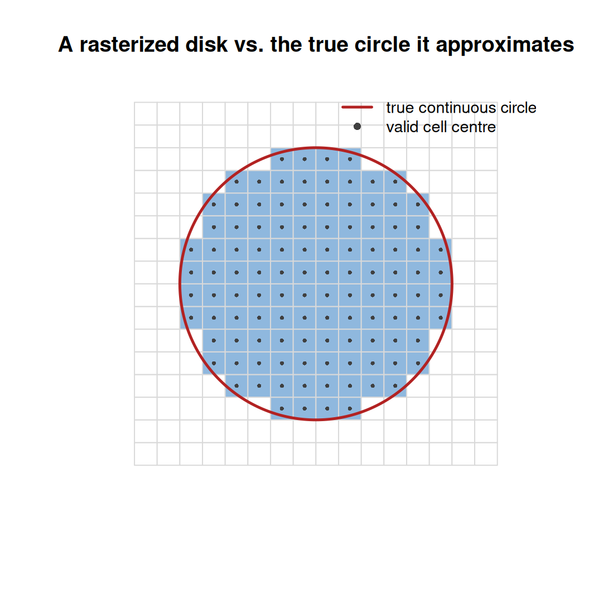
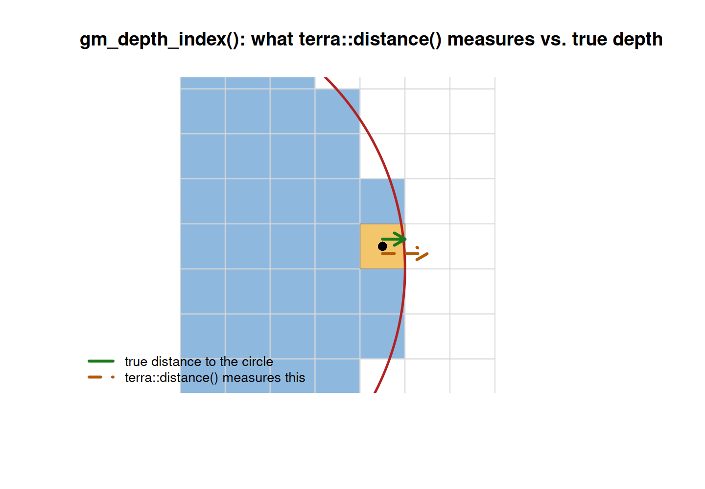
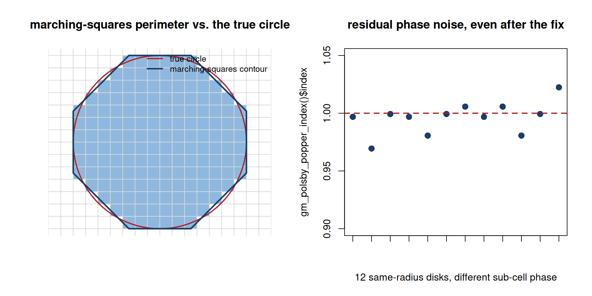
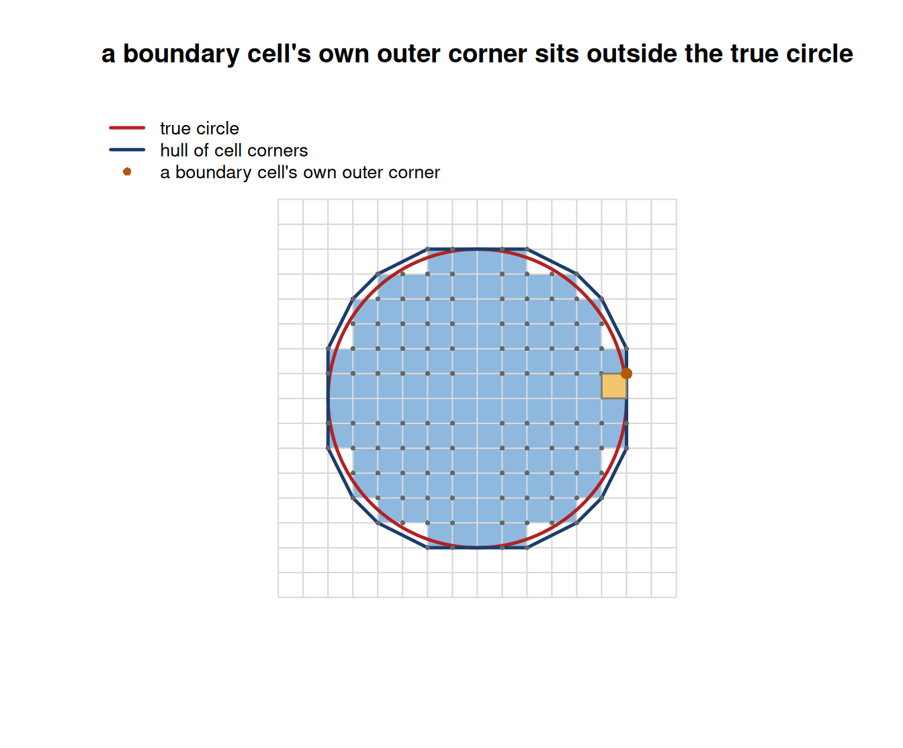
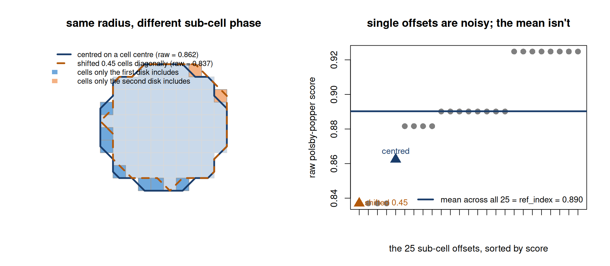
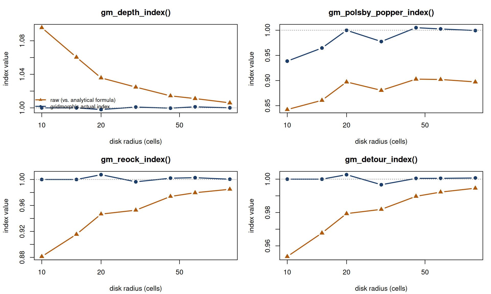

Four of gridmorph’s thirteen indices - gm_depth_index(), gm_polsby_popper_index(), gm_reock_index(), gm_detour_index() - work by comparing something measured on the raster against a reference value for a perfect circle. In each of these four, that reference used to be a plain closed-form formula: the textbook constant a smooth, infinitely precise circle would give. At any finite raster resolution, that turned out to be the wrong number to compare against - even a perfectly rasterized disk scored measurably below 1. This vignette shows the symptom, explains why it happens, and describes the fix now built into all four functions.
1 The symptom
A disk is the one shape every one of these four indices should score at (or extremely close to) 1 - that is each index’s own definition of “optimal”. Reconstructing what each function’s raw, pre-reference-fix formula would have given - using only the geometric quantities each function already returns (area, perimeter, mbc_area, hull_perimeter) - shows all four undershooting 1 well outside any reasonable rounding:
make_disk <- function(n = 81, radius = 30) {
r <- rast(nrows = n, ncols = n, xmin = 0, xmax = n, ymin = 0, ymax = n, crs = "local")
cx <- init(r, "x") - n / 2; cy <- init(r, "y") - n / 2
ifel(sqrt(cx^2 + cy^2) <= radius, 1, 0)
}
disk <- make_disk()
depth <- gm_depth_index(disk)
pp <- gm_polsby_popper_index(disk)
reock <- gm_reock_index(disk)
detour <- gm_detour_index(disk)
raw_scores <- c(
depth = depth$mean_depth / (sqrt(depth$area / pi) / 3),
polsby_popper = 4 * pi * pp$area / pp$perimeter^2,
reock = reock$area / reock$mbc_area,
detour = 2 * sqrt(pi * detour$area) / detour$hull_perimeter
)
knitr::kable(format = "html", round(raw_scores, 3), col.names = "raw score (a perfect disk should give 1)")| raw score (a perfect disk should give 1) | |
|---|---|
| depth | 1.025 |
| polsby_popper | 0.880 |
| reock | 0.953 |
| detour | 0.982 |
Comparing this to what these four functions actually return today shows the fix in effect - every one lands close to 1:
2 Why a perfect disk doesn’t score exactly 1
The four functions fall into two different mechanisms, both boiling down to the same root cause: a raster is a set of finite cells, not a continuous shape, so anything measured from it - a distance, a perimeter, an area by pixel count - is only ever an approximation of the matching continuous quantity, and that approximation doesn’t hit the continuous formula’s own constant exactly. Zooming in on a small rasterized disk against the true circle it approximates makes this concrete - the shape these four indices actually measure is the blue stair-step region, not the smooth red curve:

gm_depth_index(): mean_depth comes from terra::distance(), which measures from a cell’s own centre to the nearest invalid cell’s centre - not to the true boundary curve. That’s a systematically larger quantity than true distance-to-boundary, most so right at the boundary and decaying (but never fully vanishing at any finite resolution) toward the interior. Zooming in on one boundary cell shows the gap directly - the true distance to the circle (green) is shorter than the distance terra::distance() actually measures, to the centre of the nearest invalid cell (orange, dashed):

gm_polsby_popper_index(): perimeter comes from marching squares (terra::as.contour()), a technique built to reconstruct a smooth boundary from a smoothly-sampled field. A binary raster mask was never smoothly sampled in the first place - there’s no genuine sub-cell signal for it to interpolate - so the reconstructed perimeter carries a real, persistent overestimate that does not shrink away at finer resolutions, on top of substantial noise depending on exactly how the shape’s boundary happens to sit against the grid. The left panel shows the reconstructed contour (dark blue) cutting corners against the true circle in some places and bulging past it in others; the right panel shows twelve disks of the same radius, each centred a random fraction of a cell differently, and how much that alone moves the (already resolution-matched) index:

gm_reock_index() / gm_detour_index(): both compare a pixel-COUNT area (or a raster-derived convex hull) against an EXACTLY-computed reference (the minimum bounding circle’s area, or a perfect circle’s analytical perimeter). Pixel counting alone always slightly undershoots a shape’s true continuous area near its own boundary, while the exact reference carries no matching imprecision - so the two sides of the ratio are measured by two different conventions that don’t cancel by themselves. Under centre-based rasterization, a boundary cell’s own far corner can sit outside the true circle - the hull built from those corners (dark blue) visibly bulges past it:

3 The fix: measure the reference the same way
The common fix, used identically by all four: instead of comparing the shape’s raster-measured score against a pure formula, build an actual rasterized disk at the input’s own cell size and area, run it through the exact same measurement pipeline the shape itself just went through, and divide by that instead. Since both sides of the ratio now carry the same measurement artifacts, those artifacts cancel out rather than leaking into the final index:
c(polsby_popper_ref = pp$ref_index, reock_ref = reock$ref_index, detour_ref = detour$ref_index)polsby_popper_ref reock_ref detour_ref
0.9007295 0.9561244 0.9851745 Each of these ref_index values is exactly what a same-resolution rasterized disk itself scores on the raw, uncorrected formula - the same numbers as the “raw score” table above, just for a disk built to match the input’s own resolution rather than the input itself. gm_depth_index()’s own reference is the analogous quantity - a same-resolution disk’s own mean distance-to-boundary - returned as ref_depth rather than ref_index, since it’s a physical distance, not a dimensionless score.
One index needs a further refinement. gm_polsby_popper_index()’s marching-squares perimeter is sensitive enough to exactly where a shape’s boundary falls against the pixel grid that a single reference disk isn’t a reliable stand-in - two disks of the same radius, centred a fraction of a cell apart, can give visibly different raw scores. The left panel below overlays two such disks directly: one centred on a cell centre (solid dark outline), one shifted 0.45 cells diagonally (dashed orange outline) - the blue-shaded cells are only in the first disk, the orange-shaded cells only in the second. That’s the entire source of the difference between their raw scores. The right panel shows where those two scores (triangles) sit among the full 25-point grid of sub-cell offsets gm_polsby_popper_index() actually averages over: scattered on both sides of the mean (the dark blue line) - no single one of those 25 points would make a reliable reference on its own, but their mean is stable enough to use:

That reference is instead averaged over a grid of 25 sub-cell offsets, which was enough to keep the corrected index within about half a percent of 1 across every resolution checked. gm_reock_index() and gm_detour_index() don’t need this: their own raw scores were checked directly and shown to vary by only a few thousandths across the same offsets, so a single reference disk is already a reliable comparison.
None of these four functions expose a way to opt back into the old, purely-analytical comparison - the number it used to give was not a different valid choice, it was measurably the wrong one for a rasterized shape at any finite resolution.
Running all four functions on disks of increasing radius shows what the fix buys, and where it doesn’t: gm_depth_index()/gm_reock_index()/ gm_detour_index()’s raw scores (orange) converge toward 1 only slowly, needing a genuinely large radius to get close - the resolution-matched index (blue) is already tight at every radius shown, including the smallest. gm_polsby_popper_index()’s raw score doesn’t converge toward 1 at all, even at radius 90 - the non-vanishing bias described above - while its own resolution-matched index stays close to 1 throughout, with the visible wobble being exactly the residual phase noise from the figure above:

4 What this doesn’t cover
gm_hull_ratio_index() (area / hull_area) and gm_exchange_index() (share of a shape’s own area inside a reference circle at its centroid) are not part of this fix, and a rasterized disk still scores a little below 1 on both:
c(hull_ratio = gm_hull_ratio_index(disk)$index, exchange = gm_exchange_index(disk)$index)hull_ratio exchange
0.9684174 0.9929103 Both are self-referential - nowhere in either formula does an external circle formula appear to be measured against. gm_hull_ratio_index() compares a shape to its own convex hull; gm_exchange_index() compares a shape to a circle built from the shape’s own area and centroid. A rasterized disk’s stair-step boundary genuinely isn’t perfectly convex at the pixel level - real, tiny notches exist along it, the same way a coastline traced at high enough zoom genuinely isn’t a smooth curve. A same-resolution reference disk would show the same small gap, not erase it, because there is nothing measured incorrectly here to begin with. Both converge toward 1 as resolution increases, the ordinary way any raster-native measurement converges toward its continuous limit.